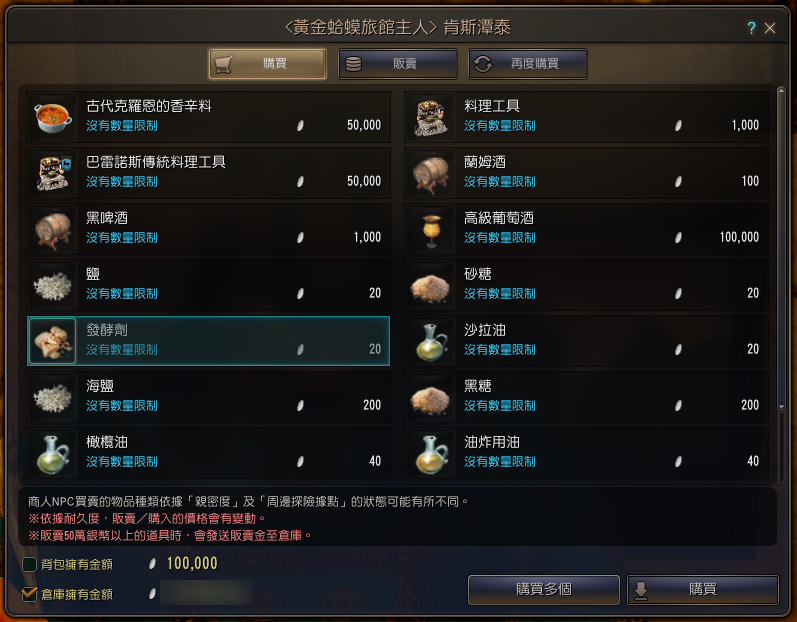
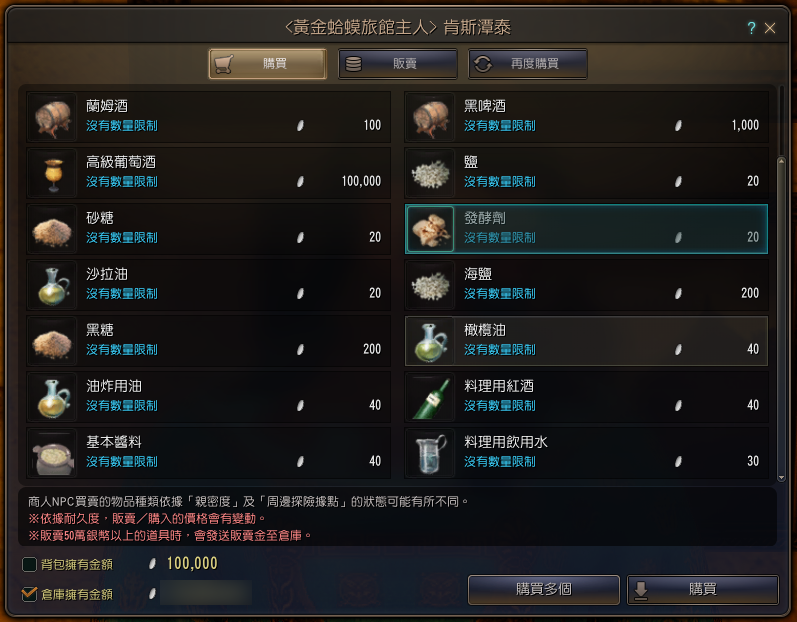
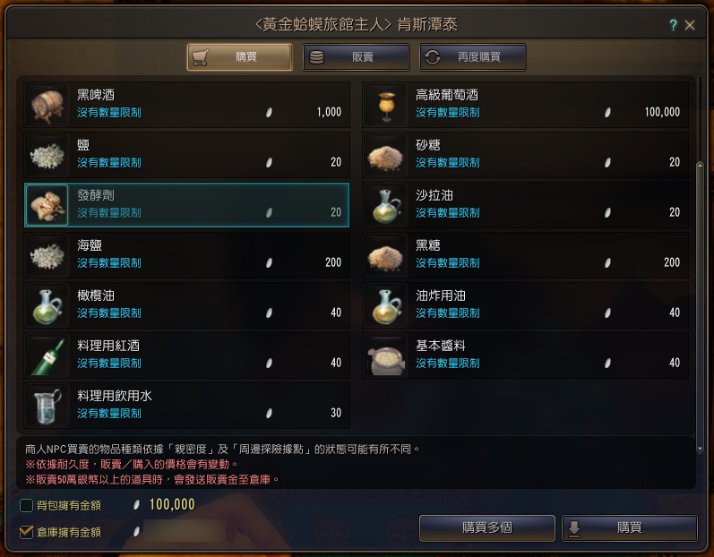

首先是商品列表的部分：
這是剛點進NPC的商品列表，圖上的發酵劑是點來當做記號的。

這是剛點進NPC的商品列表，圖上的發酵劑是點來當做記號的。
接著，我們用滑鼠滾輪把商品列表滾到底，會發現發酵劑跑到右邊。

然後我們滾回最上方，用滑鼠游標按住右邊的捲軸往下拉到底，會發現商品列表其實是長這樣才對。
其實這邊不管按捲軸的哪裡（因為按比較下面會直接跳到最下面，按比較上面會需要自己往下拉），只要會讓商品列表到最下面即可

其實這邊不管按捲軸的哪裡（因為按比較下面會直接跳到最下面，按比較上面會需要自己往下拉），只要會讓商品列表到最下面即可
綜合以上實驗得知，應該是滑鼠滾輪滾下去的時候，可能同時觸發刷新列表（因為每滾一次這邊的物品說明都會閃一次，所以我猜滾輪會觸發刷新；順帶一提，背包的是物品小圖會閃，所以一滾整個包包都滿閃的），但又不知道為什麼會有物品沒有被讀取到（這邊我猜是古代克羅恩的香辛料，因為是後來新加的，也剛好就這麼一個），造成列表往左縮一格。
其他NPC我沒有全部檢查，只跑了海地爾南邊除馬廄以外的NPC，不是商品數量太少不會有捲軸，就是商品數量剛好是雙數沒辦法做商品異位的測試。
但以上都是純屬猜測，實際原因還是要麻煩官方研究測試並且修正（這個會修嗎？）。